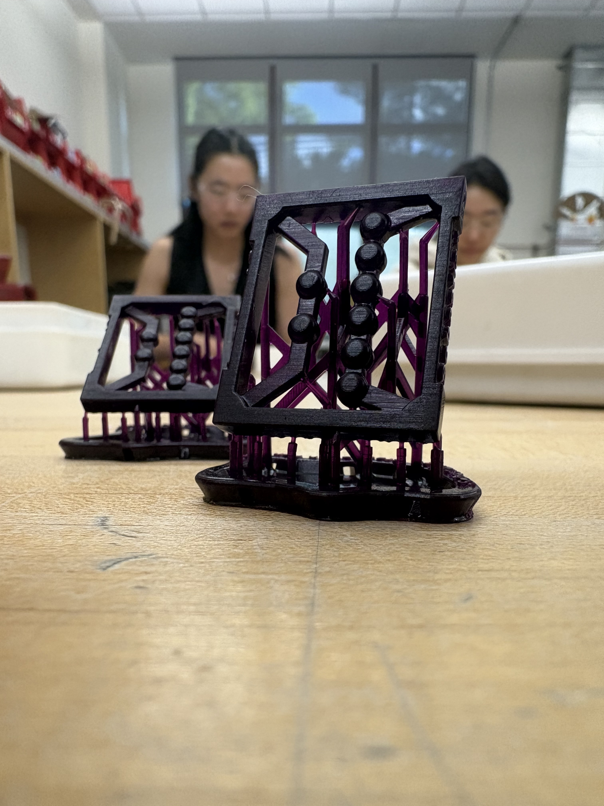
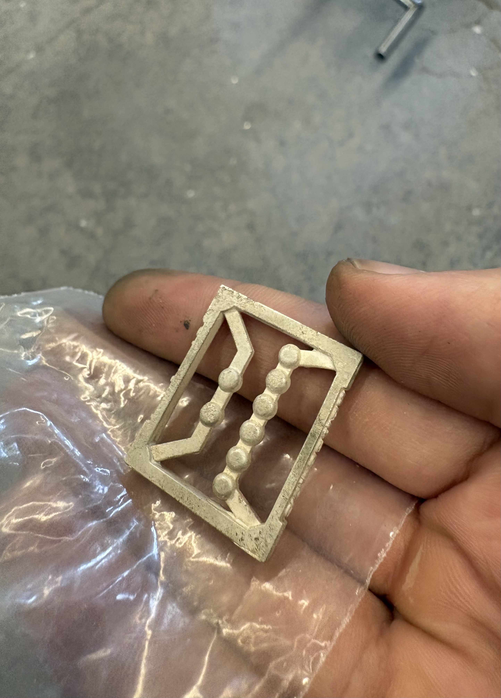
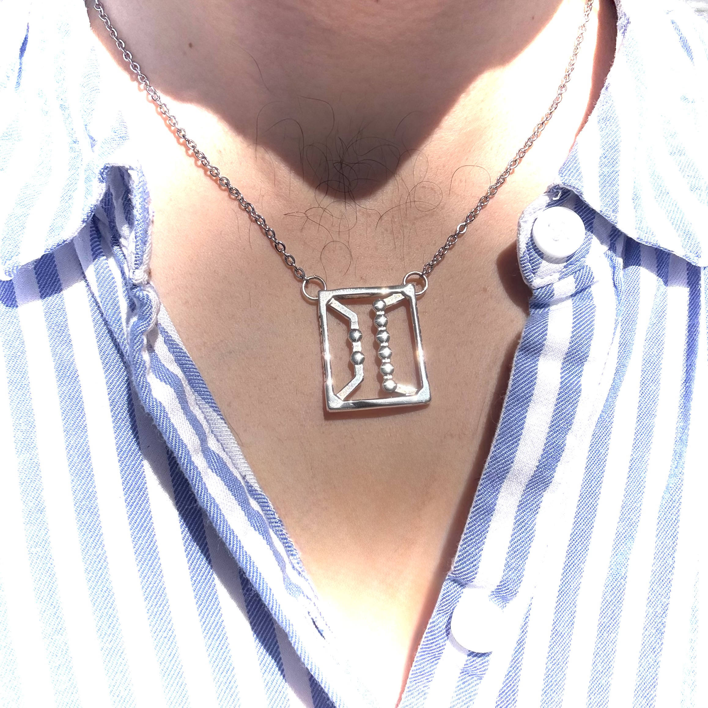

Class of 2026
Graduation Pendant
A Cast Sterling Silver Keepsake, Designed and Finished by Hand

Two orbs. Six orbs. 26 — my graduation year, cast in silver.
✦
The Journey
CAD → Wax Print → Cast → Finish
1
Wax 3D Print
The wax is lost, replaced with molten sterling silver — raw silver is all that's left in the end.

2
Lost-Wax Casting
The wax is lost, replaced with molten sterling silver — raw silver is all that's left.

3
Hand-Finishing
Filed, sanded, and polished to a finish, entirely by hand.
